ОТКРЫТОЕ АКЦИОНЕРНОЕ ОБЩЕСТВО "ГАЗПРОМ"
ВЕДОМСТВЕННЫЙ РУКОВОДЯЩИЙ ДОКУМЕНТ
ПОЛОЖЕНИЕ
ПО ТЕХНИЧЕСКОМУ ОБСЛЕДОВАНИЮ
И КОНТРОЛЮ ЗА СОСТОЯНИЕМ НАДЗЕМНЫХ ПЕРЕХОДОВ
МАГИСТРАЛЬНЫХ ГАЗОПРОВОДОВ
ВСН 39-1.10-003-2000
МОСКВА 2000
Система нормативных документов в газовой промышленности
ВЕДОМСТВЕННЫЕ СТРОИТЕЛЬНЫЕ НОРМЫ
ПОЛОЖЕНИЕ
ПО ТЕХНИЧЕСКОМУ ОБСЛЕДОВАНИЮ И
КОНТРОЛЮ ЗА СОСТОЯНИЕМ НАДЗЕМНЫХ ПЕРЕХОДОВ МАГИСТРАЛЬНЫХ ГАЗОПРОВОДОВ
ВСН 39-1.10-003-2000
ОАО «ГАЗПРОМ»
Дочернее открытое акционерное общество
«Оргэнергогаз»
Информационно-рекламный центр газовой промышленности
(ИРЦ Газпром)
Москва 2000
ПРЕДИСЛОВИЕ
РАЗРАБОТАН ДАО «Оргэнергогаз»
СОГЛАСОВАН Федеральным горным и промышленным надзором России от 6 июня 2000 г., ООО «Газнадзор» ОАО «Газпром», Всесоюзным научно-исследовательским институтом природных газов (ВНИИГАЗ)
ВНЕСЕН Управлением по транспортировке газа и газового конденсата ОАО «Газпром»
УТВЕРЖДЕН Начальником Управления по транспортировке газа и газового конденсата ОАО «Газпром» 14 июня 2000 г.
ВВЕДЕН В ДЕЙСТВИЕ Приказом ОАО "Газпром" от 21 ноября 2000 г. № 85 с 1 декабря 2000 г.
ВВЕДЕН ВПЕРВЫЕ
ИЗДАН Обществом с ограниченной ответственностью «Информационно-рекламный центр газовой промышленности (ООО «ИРЦ Газпром»)
СОДЕРЖАНИЕ
ВВЕДЕНИЕ
Настоящее положение разработано в развитие Правил технической эксплуатации магистральных газопроводов на основании опыта проектирования и эксплуатации надземных переходов, проведенных научно-исследовательских работ и предложений газотранспортных предприятий.
В нем изложены порядок и правила проведения работ по осмотрам и обследованиям надземных переходов эксплуатируемых газопроводов, приведен состав исполнительной документации по результатам обследования.
Предназначено для организаций, связанных с эксплуатацией и обследованием надземных переходов действующих МГ.
В разработке положения принимали участие сотрудники ДАО «Оргэнергогаз»: Петров Н.Г., Муханов Н.А., Спиридонов В.В., Спиридонова Н.В., Прокофьева Г.В., Лошманова Н.Г. и ООО «Газобезопасность»: Московкин А.Н.
Система нормативных документов в газовой промышленности
Ведомственные строительные нормы
Положение
по техническому обследованию и контролю за состоянием надземных переходов магистральных газопроводов
Дата введения 2000-12-01
1. ОБЩИЕ ПОЛОЖЕНИЯ
1.1. Обследования надземных переходов магистральных газопроводов проводятся для выявления технического состояния перехода в целом и его отдельных участков, узлов и элементов, а также изучения работы сооружения и его взаимодействия с окружающей средой.
1.2. Обследование надземных переходов МГ следует выполнять в соответствии с требованиями СНиП 2.05.06-85* "Магистральные трубопроводы", "Правил технической эксплуатации магистральных газопроводов", "Правил охраны магистральных трубопроводов", "Положения по организации и проведению комплексного диагностирования линейной части магистральных газопроводов ЕСГ" и настоящего положения.
При обследовании мостов (висячих, арочных, вантовых и др.) под трубопровод следует использовать СНиП 3.06.07-86* "Мосты и трубы. Правила обследования и испытаний".
1.3. Работы по обследованию надземных переходов МГ, находящихся в эксплуатации, должны выполняться силами эксплуатирующих организаций с привлечением при необходимости на договорной основе специализированных организаций, имеющих лицензию Горгортехнадзора России на соответствующие работы, а также научно-исследовательских и проектных организаций. Газотранспортные организации обеспечивают заключение договоров на проведение обследования, осуществляют организацию контроля за проведением и приемку выполненных работ.
Обследования надземных переходов МГ допускается проводить также комиссиями, назначенными приказом ОАО "Газпром".
1.5. Обследования надземных переходов МГ с помощью комплекса современной диагностической аппаратуры должны проводиться по программам и методикам, заранее разработанным эксплуатирующим предприятием или специализированной организацией в соответствии с данным Положением.
В программах должны быть отражены основные задачи и цели работ, приведены содержание и объемы работ по обследованию, указаны наблюдаемые и измеряемые признаки и параметры, технические средства, определены виды и состав отчетных технических документов.
1.6. Руководитель эксплуатирующей организации может дополнить основные положения предварительно разработанной специализированной организацией программы, учитывая особенности перехода и местные условия: наметить проведение дополнительных работ, определить состав и объем подготовительных работ, уточнить степень подробности осмотра конструкции и объем контрольных измерений, уточнить места установки измерительных приборов и т.д.
1.7. Газотранспортное предприятие обязано провести анализ готовности надземного перехода МГ к проведению работ по обследованию его различными диагностическими методами и средствами, выполнить необходимые работы по подготовке объекта в соответствии с техническими требованиями на данные методы диагностирования, согласовать режимы транспорта газа с ЦПДУ и обеспечить проведение работ в соответствии с программой работ и настоящим Положением.
1.8. Организация, проводящая работы по обследованию на договорной основе, обязана выполнить весь комплекс предусмотренных работ по обследованию, начиная с подготовки к работе диагностических средств, транспортировке их на объект до выдачи результатов анализа данных, полученных при обследовании по всем видам выполненных работ.
1.9. Используемые при обследовании средства должны быть исправны, а параметры работы отвечать техническим условиям на их изготовление и применение. Применяемые средства должны иметь сертификаты в соответствии с действующими положениями.
1.10. Все грузоподъемные механизмы и приспособления должны иметь паспорта с указанием величин грузоподъемности и сроков испытаний.
1.11. Обследование надземных переходов необходимо проводить при благоприятных погодных условиях, когда имеются условия для осмотра всех частей перехода, не нарушается работа устанавливаемых измерительных приборов.
1.12. Работы по обследованию надземных переходов необходимо выполнять с соблюдением правил охраны труда и техники безопасности, изложенных в СНиП III-4-86 "Техника безопасности в строительстве", Правилах безопасности при эксплуатации магистральных газопроводов, ЕСУОТ.
2. КЛАССИФИКАЦИЯ НАДЗЕМНЫХ ТРУБОПРОВОДОВ
2.1. По конструктивным решениям пролетных строений различают:
2.1.1. Балочные переходы:
- прямолинейные бескомпенсаторные;
- с компенсацией продольных деформаций;
- с П- и Г- образными компенсаторами;
- с наклонными 2- образными треугольными и трапециидальными компенсаторами;
- с пологими компенсационными (слабоизогнутыми) участками;
- с углами поворота в плане;
- заключенные в кожух ("труба в трубе");
- зигзагообразные в виде "змейки" (с отводами и с упругим изгибом);
- усиленные дополнительными элементами;
- совместно работающие с дополнительным балочным элементом (трубой, балкой, фермой);
- усиленные шпренгелем.
2.1.2. Арочные переходы:
- бесшарнирные с заделанными в опоры пятами;
- двухшарнирные;
- трехшарнирные (могут быть только вспомогательные несущие арки);
- с затяжками, воспринимающими распор.
2.1.3. Висячие переходы:
- одноцепные;
- двухцепные;
- простейшие с наклонными вантами;
- с распором, воспринимаемым трубопроводом;
- сложные вантовые;
- комбинированные системы;
- в виде провисающей нити самонесущие;
- в виде провисающей нити с дополнительными несущими канатами.
2.1.4. Несущие конструкции (балки, эстакады, фермы, арки, мосты) надземных переходов, которые могут быть:
- специально сооружаемыми для трубопроводов;
- предусматривающие прохождение транспортных средств и пешеходов.
2.2. Надземные переходы трубопроводов через естественные и искусственные препятствия по числу пролетов разделяются:
- на однопролетные и многопролетные.
2.3. По условиям эксплуатации надземные переходы различают на:
- переходы без специальных устройств для осмотра и ремонта их;
- с приспособлениями для передвижной тележки, люльки или для крепления подмостей;
- с эксплуатационным мостком;
- с проездом для автомашин.
2.4. По наличию антивибрационных устройств:
- переходы, не требующие специальных устройств против возникновения резонансных колебаний;
- имеющие антивибрационные устройства.
2.5. По обеспечению теплового режима транспортируемого продукта трубопроводы могут быть:
- обычные без тепловой изоляции;
- с наружной тепловой изоляцией;
- с подогревающими устройствами (электроленты и др.).
2.6. По виду опор различаются переходы:
- с грунтовыми опорами (с опиранием трубопровода непосредственно на грунт и с распределением давления с помощью железобетонных, плит);
- с поверхностными опорами из сборных железобетонных элементов;
- со свайными опорами;
- с массивными опорами;
- с опорами, воспринимающими горизонтальные усилия (анкерные опоры, устои арочных переходов);
- с опорами, совмещенными с ледорезами;
- с опорами, имеющими самостоятельные ледорезы.
2.7. По категориям
Надземные переходы газопроводов через водные преграды делятся на категории, требования к которым, в зависимости от условий работы, объема неразрушающего контроля сварных соединений и величины испытательного, давления определяются по СНиП 2.05.06-85* "Магистральные трубопроводы".
3. ОРГАНИЗАЦИЯ ОСМОТРОВ НАДЗЕМНЫХ ПЕРЕХОДОВ МГ
3.1. На всех надземных переходах необходимо регулярно проводить плановые осмотры. Осмотры осуществляются техническим персоналом ЛЭС.
3.2. При осмотрах надземных переходов газопроводов необходимо, как правило, применять систему обозначений и маркировки элементов, принятую в исполнительной документации сооружения.
3.3. Цель осмотров надземных переходов газопроводов:
наблюдение за общим состоянием надземных переходов с выявлением дефектов, требующих устранения, обнаружение нарушений Правил технической эксплуатации магистральных трубопроводов. Правил охраны магистральных газопроводов, выявление утечек, предаварийных состояний и аварий, других неполадок и повреждений, угрожающих целостности и нормальной эксплуатации газопровода.
3.4. При осмотре проверяют:
- охранную зону и зону минимальных расстояний;
- знаки судоходной обстановки;
- наличие реперов и знаков обозначения трассы;
- надежность ограждающих устройств, смотровых приспособлений, противопожарного оборудования и прочих эксплуатационных обустройств;
- узлы пуска и приема очистных устройств;
- крановые площадки;
- водопропускные сооружения и устройства;
- периодически подтопляемые территории, прилегающие к переходу;
- состояние откосов, каменных набросов и облицовок;
- места возможных размывов;
- знаки пересечения газопровода с водными препятствиями.
3.5. При осмотре надземного перехода МГ, независимо от его конструктивной схемы, основное внимание следует уделять выявлению повреждений и дефектов, требующих устранения, для чего:
- проверяется техническое состояние газопровода, при этом выявляют отклонение оси трубы от проектного положения, нарушение формы поперечных сечений труб, дефекты стенки трубы и сварных соединений, нарушение сплошности защитных покрытий, повреждения в прикреплениях элементов и т.д.;
- осматриваются опоры надземных переходов газопроводов и выявляются дефекты, характерные для материала, из которого выполнены опоры, а также дефекты и повреждения, обусловленные особенностями конструкций, сооружения и работы опор:
трещины и сколы в местах опирания конструкций;
нарушения целостности опор;
механические повреждения опор в зонах воздействия ледохода, карчехода;
повреждения конструкций опор в зоне переменного уровня воды, вызванные климатическими факторами и воздействием воды;
повреждения опор, вызванные воздействием судоходного и сухопутного транспорта;
положение стоек опор в вертикальной и горизонтальной плоскостях;
осматривается состояние опорных частей, при этом проверяется:
правильность положения подвижных опорных элементов с учетом температуры и обеспеченность расчетных температурных перемещений газопровода, как линейных, так и угловых;
состояние поверхностей качения и скольжения подвижных опорных частей;
равномерность взаимного опирания опорных частей и прилегающих к ним конструкций опор и газопровода;
состояние упоров, ограничивающих поперечные перемещение опорных частей;
состояние и положение подкладных элементов, затяжка болтовых соединений;
- выявляются колебания трубопровода и условия их возникновения (время года, погода, температура воздуха и газа, режим эксплуатации газопровода, скорость и направление ветра по отношению к трубопроводу, изменение или пульсация давления газа в трубопроводе, скорость газа в трубопроводе);
- оцениваются места выхода газопровода из грунта (тип грунта, состояние изоляции, состояние опорных элементов);
- проверяется состояние вспомогательных конструкций, увеличивающих вертикальную и горизонтальную жесткость пролетного строения;
- осматривается состояние металлических конструкции надземного перехода МГ и выявляются дефекты и повреждения элементов, стыков и прикреплений (погнутости, вмятины, местные ослабления, трещины, разрывы, неплотности, незатянутые болты и т.д.);
- выявляются конструктивные недостатки, способствующие интенсивной коррозии из-за застоя влаги, скопления снега и льда и плохого проветривания;
- проверяется состояние окраски во всех стальных конструкциях, отмечаются дефекты в окраске (механические повреждения, шелушение, пузыри, подтеки и т.п.), выявляется состояние металла под окраской;
- выявляются трещины в металлических конструкциях, выясняется причина их образования, оценивается опасность для несущей способности, нейтрализуются трещины (перекрытие трещин накладками на болтах и т.п.);
- проверяется целостность болтов и надежность соединения болтов и плотность прилегания головок болтов и гаек к соединяемым элементам;
- проверяется наличие клиновидных шайб под головками болтов или под гайками при расположении болтов под углом к соединяемым элементам;
- проверяется величина натяжения высокопрочных болтов (выборочно) с помощью специального ключа, снабженного приспособлением для контроля. В число проверяемых включают болты со следами потеков ржавчины у головок шайб или гаек.
3.6. При осмотре арочных надземных переходов МГ дополнительно проверяется состояние береговых упоров, заделок пят арок, состояние оттяжек, раскосов, точность соблюдения очертания арок (геодезическими методами), стрелы подъема.
3.7. При осмотре висячих переходов МГ, дополнительно проверяется состояние вант и подвесок, узлов крепления подвесок к несущим тросам и к балке жесткости, соединительных муфт подвесок и их резьб, узлов крепления тросов (вант) к пилонам, опорных частей пилонов и анкерных конструкций на концах оттяжек.
3.8. При обследовании зоны под воздушным переходом с помощью осмотра, измерений, съемок и опроса работников эксплуатационных служб устанавливают:
- состояние русла реки, пойменных участков, берегов, берегоукрепительных и регуляционных сооружений, изменение положения главного русла по отношению к опорам;
- образование новых проток и островов (по сравнению с проектом и предыдущими обследованиями);
- наличие посторонних предметов, создающих дополнительное стеснение русла или поймы, наличие размывов русла вблизи опор;
- характер отрицательного воздействия сооружений перехода на окружающую среду (подтопление, заболачивание, образование оврагов, обрушение берегов и т.п.).
3.9. Обнаруженные при осмотре неисправности, повреждения, дефекты должны регистрироваться в журнале осмотра линейной части газопровода с указанием времени выявления и возможных причин появления. Дефекты, требующие незамедлительного устранения, необходимо фиксировать в натуре и в технической документации. При необходимости следует организовывать и вести наблюдение за изменением дефектов и параметров во времени, проводить контрольно-инструментальные измерения для выявления общих деформаций элементов. Результаты осмотра используют для разработки детального плана выполнения работ по обследованию переходов и наблюдений, а также ремонтных работ.
3.10. Результаты осмотра ЛЭС должна сообщать в объектный отдел диагностики и производственный отдел предприятия в сроки, установленные Положением по организации и проведению комплексного диагностирования линейной части магистральных газопроводов ЕСГ.
3.11. Сроки плановых осмотров надземных переходов устанавливаются в соответствии с пунктом 1.4 настоящего положения, но не реже сроков обследования линейной части трубопроводов.
Виды осмотра - наземный, воздушных, внутритрубная инспекция назначаются эксплуатирующей организацией для всех переходов, исходя из конкретных местных условий и технологических особенностей эксплуатации переходов трубопроводов. Надземные переходы в обязательном порядке следует обследовать перед паводком и после него.
4. ОБСЛЕДОВАНИЕ НАДЗЕМНЫХ ПЕРЕХОДОВ МАГИСТРАЛЬНЫХ ГАЗОПРОВОДОВ
4.1. Основными задачами обследований эксплуатируемых надземных переходов МГ является проверка их работоспособности, выявление дефектов, изменений технологических режимов и технического состояния, условий взаимодействия с окружающей средой, соответствия проекту и нормативным требованиям, анализ данных о фактическом состоянии переходов газопроводов и разработка практических рекомендаций и мероприятий по устранению выявленных нарушений и причин их вызывающих.
Обследования могут проводиться также для решения специальных вопросов, например, для разработки проектов капитального ремонта и реконструкции переходов, в том числе после истечения срока амортизации объекта.
- определение пространственного положения и перемещений газопровода;
- определение фактического напряженно-деформированного состояния газопровода;
- обследование коррозионного состояния стенки трубопровода и конструктивных элементов перехода ;
- обследование состояния металла стенки газопровода и металлических конструкций надземных переходов с целью обнаружения дефектов;
- обследование состояния защитного покрытия от коррозии;
- обследование состояния внутренней поверхности газопровода;
- наблюдение за динамикой условий эксплуатации (замеры давления, температуры продукта и окружающей среды и перемещений трубопровода, экологический мониторинг).
4.3. К началу работ эксплуатирующей организацией должна быть полностью закончена подготовки смотровых приспособлений на сооружении, обеспечивающих доступ к осматриваемым элементам. Все смотровые приспособления и другие специальные обустройства на сооружении должны быть приняты руководителем бригады, выполняющей обследование.
4.4. В необходимых случаях эксплуатирующая организация должна устанавливать специальные долговременные репера и марки для ведения наблюдений.
Виды наблюдений и их периодичность устанавливаются специальной программой в зависимости от характера и прогнозируемой скорости протекания изучаемых явлений.
Наблюдения в зависимости от их целей и содержания должны выполняться силами эксплуатирующих организаций, или на договорных условиях специализированными организациями.
4.5. Обследование надземных переходов проводится в три этапа:
- первый - предполевые работы;
- второй - полевые работы;
- третий - анализ и оформление результатов обследования.
4.6. Предполевые работы включают организационно-техническую и научно-методическую подготовку обследования.
При решении организационно-технических вопросов осуществляется подбор, заказ и получение технической документации, решение вопросов технического обеспечения, выбор типовой технологической схемы обследования или разработка новой, получение разрешения на обследование от газотранспортного предприятия, составление программы обследования исполнителем работ и согласование ее с эксплуатирующей организацией.
4.7. Степень подробности рассмотрения технической документации определяется руководителем работ, исходя из задач, поставленных в программе работ по обследованию надземных переходов МГ. Предоставление необходимой документации осуществляется эксплуатирующей организацией.
При ознакомлении с технической документацией законченных строительством сооружений следует обратить внимание:
- на соответствие конструктивных характеристик переходов проектным решениям;
- на правильность оформления отступлений от утвержденного проекта и действующих нормативных документов;
- на соответствие проекту физических, механических и химических характеристик примененных строительных материалов;
- на наличие актов на пооперационную приемку всех видов работ по сооружению переходов через водные преграды (в т.ч. скрытых работ) с приложением исполнительных профилей, привязанных к постоянным реперам.
Ознакомление с технической документацией эксплуатируемых надземных переходов также включает в себя:
- изучение материалов ранее проведенных обследований и испытаний;
- анализ конструктивных изменений в процессе эксплуатации;
- изучение материалов, касающихся выполнения работ по текущему содержанию, ремонтам, длительным наблюдениям;
- анализ выполнения ранее выданных рекомендаций по поддержанию сооружения в исправном состоянии;
- анализ причин аварии по актам расследований;
- анализ материалов дешифрирования аэрофотоснимков и др.
4.8. При ознакомлении с документацией по содержанию следует проверять полноту информации в ней о сооружении. Если в этих документах отсутствуют необходимые сведения или приведенные сведения не соответствуют действительности, нужно внести в них коррективы (совместно с представителем ЛЭС). Уточненные сведения о сооружении должны быть переданы в предприятие и внесены в банк данных.
4.9. Выбор методов и средств для обследований надземных переходов МГ определяется задачами обследования, технологическими, конструктивными и геометрическими параметрами перехода трубопровода, климатическими условиями.
4.10. Полевые работы включают визуальный осмотр надземного перехода и обследование с применением диагностических средств и оборудования для оценки технического состояния газопровода и отдельных узлов перехода.
4.11. При первом обследовании сооружения необходимо установить начальное состояние всех контролируемых параметров и при последующих обследованиях производить их измерение в одних и тех же сечениях, за исключением случаев возникновения и проявлений аварийного состояния между сечениями, в которых производили контроль.
Положение сооружения и его элементов в плане и профиле необходимо определять при каждом обследовании. При этих работах следует снимать положение главной оси трубопровода по высоте и в плане и определять высотное положение опор в относительных отметках, т.е. привязанных к отметке специального репера или абсолютных отметках (Приложение 1).
4.12. При визуальном обнаружении наклона опор (с помощью отвеса) необходимо определить его значение в вертикальной плоскости, как вдоль, так и поперек надземного перехода.
4.13. Все изменения положения сооружения и его элементов в плане и профиле определяются путем сопоставления ранее проведенных измерений с полученными при последнем обследовании.
4.14. С целью измерения перемещений газопровода в горизонтальной плоскости на ригелях опор и трубе краской наносятся риски, относительно которых фиксируют смещение трубопровода. На подкладных седлах допускается наносить риски путем накернивания с последующим их закрашиванием. Для замеров небольших перемещений могут быть использованы прогибомеры Максимова или, при значительных перемещениях, приборы с автоматической регистрацией. Большие перемещения могут быть замерены при помощи отвеса и линейки.
4.15. Одновременно с наблюдениями за деформациями надземного перехода необходимо измерять температуру стенки трубы, а также параметры технологического режима газопровода (давление, расход и температура газа).
4.16. Обследование фактического напряженно-деформированного состояния газопровода на надземном переходе должно производиться, по крайней мере, двумя способами, дублирующими друг друга. (Это может быть расчетный метод, основанный на расчете действующих напряжений по результатам замеров положения оси трубопровода; метод тензометрии, а также приборный, например, магнитный, рентгеновский и др.).
4.17. При необходимости контроля качества материалов конструктивных элементов перехода и сварных стыков следует использовать неразрушающие методы (например, ультразвуковой, метод акустической эмиссии и др.).
4.18. При каждом обследовании необходимо контролировать качество противокоррозионных покрытий трубопровода, опор и др. металлических конструкций по толщине и по сплошности внешним осмотром (равномерность слоя, отсутствие пропусков и пузырей) и толщиномером.
Необходимо контролировать коррозионное состояние трубопровода на участке выхода его из грунта путем осмотра и инструментальных измерений.
4.19. Контроль за утечками газа выполняется с целью определения сквозных повреждений стенки газопровода и нарушений уплотнения запорной арматуры.
Зонами наиболее вероятного появления сквозных дефектов и неплотностей на надземном переходе может быть участок в месте выхода газопровода из грунта на открытую поверхность и по отводам компенсатора, а также продольные и поперечные швы по всей длине.
Обследование участков производится визуально (по шуму газа или запаху) или с применением специальных приборов и устройств (нормативным акустическим течеискателем, газоанализатором). Этими же методами производится обследование неплотностей запорной арматуры и камер пуска-приема. При наличии используются системы автоматического газового контроля.
4.20. При соответствующем технико-экономическом обосновании и наличии необходимых условий надземный переход газопровода следует диагностировать с помощью приборных поршней, фиксирующих при прохождении внутри газопровода геометрические его параметры (овальность, сужение, вмятины, углы поворота), а также коррозионные повреждения внутренней и наружной поверхности металла труб и внутренние дефекты стенок трубопровода (расслоения, неметаллические включения, трещины и т.д.).
Требования, предъявляемые к участках ЛЧ МГ и к снарядам-дефектоскопам, определяющие возможность использования внутренних инспекционных снарядов, установлены "Инструкцией по внутритрубной инспекции трубопроводных систем".
4.21. Необходимость испытания надземного перехода, подводного обследования опор, лабораторной проверки качества материала и других специальных работ определяется по результатом анализа комплекса работ по п. 4.2.
4.22. На надземных переходах через крупные реки должна создаваться автоматизированная система телеметрического комплекса по специальному проекту для получения информации о действительных условиях эксплуатации перехода газопровода и его взаимодействии с окружающей средой.
4.23. Анализ и оформление результатов обследования производится в соответствии с положениями, изложенными в главах 5 и 6.
5. ОЦЕНКА НАДЗЕМНОГО ПЕРЕХОДА ПО ДАННЫМ ОБСЛЕДОВАНИЯ
5.1. Оценка технического состояния и работы сооружения должна производиться путем всестороннего анализа данных, полученных при обследовании по всем видам выполненных работ на основе строительных норм и правил, стандартов, технических условий, инструкций, методик, проектных решений и др. нормативных требований.
При оценке работоспособности балочных переходов по фактическим параметрам, определяющим их текущее техническое состояние, следует также использовать разработанную ВНИИГАЗом «Методику оценки работоспособности балочных переходов магистральных газопроводов через малые реки, ручьи и другие препятствия»
5.2. Обнаруженные при обследовании дефекты и повреждения конструкций следует оценить с точки зрения их влияния на несущую способность, долговечность и эксплуатационные качества перехода.
5.3. Полученные при обследовании данные по контрольным измерениям и съемкам сравниваются с допускаемыми отклонениями на изготовление и монтаж конструкций, а также сопоставляются с результатами предшествовавших обследований. В случае нарушения допусков и других требований должно быть оценено влияние зафиксированных отклонений на несущую способность и эксплуатационные качества сооружения.
5.4. По материалам проведенных обследований разрабатываются мероприятия по обеспечению нормальной и безопасной эксплуатации перехода. В зависимости от характера, значимости и распространения обнаруженных дефектов и повреждений могут предусматриваться: проведение различных видов ремонтных работ, реконструкция, усиление отдельных элементов, переход на новый технологический режим эксплуатации и др.
6. ОФОРМЛЕНИЕ РЕЗУЛЬТАТОВ ОБСЛЕДОВАНИЯ
6.1. Документы по результатам обследования должны содержать:
а) акты и заключения.
Краткое описание обследуемого надземного перехода МГ;
перечень выполненных работ;
основные результаты работ и их краткий анализ;
выводы о возможности дальнейшей эксплуатации.
б) отчеты.
Описание конструкции перехода, поверхностных условий, технологии транспорта продукта, необходимых сведений из проектной и др. технической документации, которые могут быть использованы для обоснования выводов;
краткое описание технологии строительства с указанием отступлений, возникших на стадии строительства;
результаты проведенных обследований (дефектная ведомость, описание дефектов и повреждений, результаты контрольного измерения и съемок, результаты обследования разными методами и средствами);
выводы о состоянии сооружения и о соответствии его работы расчетным предпосылкам;
рекомендации по устранению дефектов и повреждений;
условия дальнейшей эксплуатации.
При необходимости повторных обследований и длительных наблюдений в выводах следует делать соответствующие предложения.
В отчет необходимо включать схемы, чертежи, фото и другие иллюстративные материалы.
В приложениях к отчету рекомендуется помещать:
вспомогательные материалы;
расчетные таблицы;
программу обследований;
выписки из проектной, строительной и эксплуатационной документации;
результаты проверочных расчетов;
акты и материалы по работам, выполненным с привлечением специализированных организаций;
и др.
6.2. Газотранспортное предприятие и организация, проводившая обследование, должна предоставлять своевременно информацию о техническом состоянии и параметрах наблюдений в центральный и региональный отделы диагностики для внесения в банки данных соответствующих объектов в соответствии с "Положением по организации и проведению комплексного диагностирования линейной части МГ ЕСГ".
7. ОХРАНА ТРУДА И ТЕХНИКА БЕЗОПАСНОСТИ
7.1. К выполнению работ по обследованию надземных переходов, допускаются лица:
- не моложе 18 лет;
- имеющие соответствующую квалификацию;
- прошедшие медицинский осмотр и признанные годными к проведению работ;
- прошедшие обучение безопасным методам и приемам выполнения работ, проверку знаний по охране труда в установленном порядке и имеющие соответствующее удостоверение;
- имеющие допуск на выполнение газоопасных работ;
- прошедшие вводный и периодические инструктажи на рабочем месте по охране труда и пожарной безопасности в соответствии с требованиями ЕСУОТ в ГП, ГОСТ 12.0.004-90 "Организация обучения безопасности труда. Общие положения" и "Правил пожарной безопасности для предприятий и организаций газовой промышленности" (ВППБ 01-04-98);
- имеющие право проведения верхолазных работ (при выполнении работ на высоте более 5 метров от поверхности земли, перекрытия или рабочего настила, над которыми проводятся работы непосредственно с обследуемых конструкций. При этом основным средством, предохраняющим работника от падения с высоты, является предохранительный пояс).
7.2. Работники, участвующие в работах по обследованию, должны быть обеспечены средствами индивидуальной защиты (согласно Типовым отраслевым нормам).
7.3. Работы по обследованию относятся к газоопасным. В связи с этим порядок проведения работ определяется эксплуатирующей организацией в соответствии с "Типовой инструкцией по организации безопасного проведения газоопасных работ". В случае выполнения обследований с привлечением сторонних организаций (подрядчиков) работы должны выполняться по наряду-допуску на производство газоопасных работ, выдаваемому эксплуатирующей организацией.
7.4. До начала работ по обследованию ответственный за производство работ проводит инструктаж по охране труда с работниками бригады с учетом особенностей данного конкретного объекта. В состав инструктажа должны быть включены вопросы:
- о порядке, способе и безопасных методах проведения работ;
- о порядке применения средств индивидуальной защиты;
- о способах оказания первой доврачебной помощи пострадавшим;
- о действиях работников при возникновении аварийных ситуаций. Инструктаж работников завершается проверкой их знаний в форме устного опроса, о чем производится запись в журнале регистрации, инструктажа или наряде-допуске, разрешающем производство работ, с обязательной росписью инструктируемого и инструктирующего.
7.5. При проведении обследования работниками нескольких подразделений одного предприятия (управления) порядок организации и проведения работ устанавливается руководством предприятия с учетом обеспечения здоровых и безопасных условий труда.
При совместном проведении обследования работниками нескольких предприятий (заказчиком и подрядчиком) или самостоятельно подрядчиком, порядок организации и производства работ и ответственность сторон за обеспечение здоровых и безопасных условий труда определяются документально при заключении сторонами договоров подряда.
7.6. Работы по обследованию, проводимые на высоте 1,3 метра и более в отсутствии перильных ограждений, должны выполняться по наряду-допуску с использованием предохранительных поясов и страховочных канатов. В наряде-допуске на производство работ повышенной опасности (работы на высоте) должны быть определены: места и способы крепления предохранительных поясов и страховочных канатов, пути и способы подъема работающих к месту обследования.
7.7. Применяемые при обследовании средства подмащивания (леса, подвесные леса, подмости, подъемные подмости (люльки) и т.д.), а также стремянки, приставные лестницы и другие приспособления должны обеспечивать безопасное производство работ и эксплуатироваться в соответствии с требованиями действующих нормативных документов.
7.8. При проведении обследования газопроводов средства подмащивания должны устанавливаться по обе стороны (сплошной настил) от газопровода с размещением пола настила до нижней образующей трубопровода, обеспечивающего нормальное проведение обследования. В случае размещения средств подмащивания с одной стороны газопровода необходимо применять средства коллективной защиты (ограждающие или улавливающие устройства) или предохранительные пояса. При применении предохранительных поясов должны быть определены места и способы их крепления.
7.9. Используемые при обследовании предохранительные пояса и страховочные канаты должны быть испытаны на прочность, а перед работой и после каждого применения должны подвергаться наружным осмотрам.
7.10. Работы по обследованию (обстукивание сварных швов, покрытых коррозией металлических элементов, поверхности бетона, очистка защитного покрытия и т.д.), при которых возможно поражение глаз работающего, необходимо проводить в защитных очках с ударостойкими стеклами или защитных ударостойких лицевых щитках.
7.11. Лебедки, домкраты и др. приспособления, используемые при производстве работ по обследованию, должны эксплуатироваться согласно требований действующей нормативной и эксплуатационной документации.
Ответственность за соблюдение требований безопасности при эксплуатации лебедок, домкратов и др. приспособлений, используемых при производстве работ по обследованию, возлагается:
- за техническое состояние - на организацию (лицо) на балансе (в собственности), которой они находятся, а при их передаче во временное пользование (аренду) - на организацию (лицо) определенную договором;
- за выполнение требований безопасного производства работ - на лицо ответственного за производство работ.
7.12. "Исполнитель" самостоятельно отвечает за безопасную организацию своей деятельности, за соблюдение правил техники безопасности при производстве работ по обследованию надземных переходов, при следовании к месту работы и несет всю полноту ответственности за их нарушение и наступление последствий.
7.13. Во время обследования запрещается нахождение в опасной зоне посторонних лиц и персонала, не принимающего непосредственного участия в этих работах.
7.14. При производстве работ по обследованию, связанных с передвижением по воде, работники должны быть обеспечены спасательными плавсредствами и находиться под постоянным надзором назначенных ответственных лиц, владеющих способами спасения утопающих и умеющих оказывать первую доврачебную помощь.
7.15. Во время производства работ по обследованию должна быть постоянная телефонная (проводная или радио) связь с диспетчером или руководителем подразделения, эксплуатирующего газопровод.
7.16. Обследование надземных газопроводов необходимо прекратить:
- по распоряжению диспетчера или представителя подразделения, эксплуатирующего газопровод;
- при возникновении аварийной ситуации (обнаружении утечек газа и др.);
- изменении погодных условий (снегопад, туман или дождь), ухудшающих видимость в пределах фронта работ, а также усилении ветра до скорости 15 м/с и более;
- при возникновении неисправностей в конструкции подмостей, средствах безопасности и других отказов, которые могут привести к аварийной ситуации.
7.17. При возникновении аварийной ситуации на обследуемом газопроводе, ответственный за производство работ должен немедленно прекратить работы по обследованию, вывести работников из опасной зоны и сообщить о случившемся диспетчеру или руководителю подразделения эксплуатирующего газопровод.
Приложение №1.
СОПУТСТВУЮЩИЕ ГЕОДЕЗИЧЕСКИЕ РАБОТЫ
1. ОБЩИЕ ПОЛОЖЕНИЯ
При наблюдении за надземными переходами трубопроводов используются геодезические методы обследования. Геодезические методы позволяют определить пространственное положение конструктивных элементов переходов и его изменение во времени. Трансформированное, по сравнению с проектным, пространственное положение опор, пилонов, трубопроводов и т.д., вызывает изменение расчетного напряженного состояния элементов конструкции и может привести к аварийным ситуациям.
Для определения перемещений периодически (по циклам) измеряют отметки Н и координаты Х и Y горизонтальной плоскости деформационных знаков.
Вертикальное перемещение 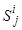 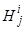 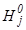
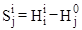
Продольную составляющую и поперечную составляющую 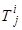
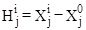
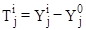
где Х - абсцисса наблюдаемой точки (по продольной оси объекта);
Y - ордината наблюдаемой точки (по поперечной оси объекта).
Для определения отметок используют геометрическое нивелирование и нивелирование наклонным лучом с определением отметок конечных точек. При определении плановых координат Х и Y применяют полигонометрию, створные измерения и «боковое нивелирование». Выбор метода измерений зависит от требований к точности, особенностей объекта и условий местности.
Наблюдения за перемещениями предназначаются для:
- исследовательских целей;
- профилактических обследований сооружений.
Наблюдения за перемещениями с исследовательской целью производят одновременно с геокриологическими и теплофизическими исследованиями, что позволяет комплексно оценить закономерности протекания во времени процессов в конструкциях сооружения и в подстилающих породах.
Профилактическое обследование выполняют для своевременного выявления повреждений и предупреждения остановок и аварий на объектах.
2. РЕКОГНОСЦИРОВКА ОБЪЕКТА
При рекогносцировке производят общий осмотр объекта, устанавливают наличие пунктов государственной геодезической сети, реперов и знаков закрепления осей и пикетажа; выявляют особенности конструкций сооружения и участки трассы, подверженные наибольшим деформациям. Одновременно с осмотром объекта намечают точки для наблюдений за перемещениями и устанавливают места закладки опорных пунктов.
В отдельных случаях производят фотографирование сооружения и местности.
При рекогносцировке необходимо иметь проектную документацию по объекту и сведения о геологических, геокрилогических, теплофизических и других исследованиях района.
По результатам рекогносцировки составляют общее описание, в котором приводят сведения о наличии пунктов государственных геодезических сетей, знаков закрепления осей сооружений и пикетажа, о внешних признаках состояния сооружений и трубопровода, а также сведения об имеющихся деформациях. Особое внимание обращают на описание слабых мест конструкций и наиболее «опасных» участков.
Результаты рекогносцировки используют для разработки технического задания на производство наблюдений и детального плана выполнения этих видов работ.
3. ПЛАНОВОЕ И ВЫСОТНОЕ ГЕОДЕЗИЧЕСКОЕ ОБОСНОВАНИЕ
Геодезическое обоснование на объекте создают для определения отметок и координат пунктов, которые служат опорой для наблюдений за перемещениями конструкций перехода и трубопровода.
Различают два вида обоснования: опорную геодезическую сеть и рабочее обоснование.
Основное требование к пунктам опорной геодезической сети - это неизменность их пространственного положения на весь период наблюдений за перемещениями объекта. Пункты этой сети закрепляют опорными реперами. При производстве работ в условиях многолетнемерзлых пород предлагается следующее устройство (рис. 1). Опорный репер состоит из металлической штанги б с анкером 1, обсадной трубы 7 и бетонного монолита 8.
Металлическую штангу с приваренным внизу анкером устанавливают в скважину диаметром 150-200 мл и замоноличивают в вечномерзлом грунте бетоном. Образовавшийся монолит должен располагаться ниже верхней границы залегания вечномерзлых грунтов на 3 м. Обсадную трубу заглубляют в вечномерзлый грунт на 0,5-1,0 м. Металлическая штанга и обсадная труба выступают над поверхностью земли не менее 0,5 м. Для предохранения центра пункта от атмосферной влаги обсадная труба снабжается откидывающейся на шарнире крышкой 5. Металлическую штангу покрывают несколькими слоями незамерзающей смазки, например, солидолом, и виниловой лентой, что предохраняет ее от смерзания с попавшей в скважину водой, пространство между обсадной трубой и защитным слоем заполняют теплоизоляционным материалом 2, например, стекловатой.
Верхнюю часть металлической штанги 6 делают в виде сферической поверхности. Если опорный пункт имеет плановые координаты, то на сферической поверхности наносят крестообразную насечку или высверливают отверстие, для лучшего опознавания зачеканивают медью.
В качестве опорного репера используют обсадные трубы термометрических скважин глубиной 10 м, если они целиком находятся в вечномерзлом грунте. Однако, использование их в плановых сетях затруднено, т.к. требует дополнительного приспособления для фиксации центра знака. Кроме того, верхняя часть обсадной трубы может иметь боковые смещения под воздействием перемещений грунта у поверхности.
Опорные реперы устанавливают вне зоны просадочных воронок и подвижек грунта под воздействием сооружения.
При наблюдениях за вертикальными перемещениями наземных сооружений устанавливают куст из трех реперов, что позволяет определить устойчивость реперов. Для этого сравнивают все три превышения между реперами с превышениями в предшествующих замерах. Если расхождения не превышают удвоенной погрешности измерений, то реперы считают устойчивыми. Если условие нарушено, то выявляют устойчивость каждого репера в кусте. Для этого последовательно считают каждый репер устойчивым (исходным) и вычисляют отметки двух других реперов. Если отметки этих двух реперов изменились на одну и ту же величину, то это означает, что первый репер изменил на эту величину свою отметку.
При этом для контроля дополнительно учитывают ожидаемое направление вертикального перемещения (осадки или выпучивания).
При наблюдениях за вертикальными перемещениями опорные реперы на равнинной местности устанавливают не менее чем в 10 м от объекта. На крутых склонах опорные реперы устанавливают на всех существенных перегибах ската, что позволяет применять нивелирование наклонной линией с известными отметками в конечных точках.
Для определения отметок по опорным реперам прокладывают нивелирный ход. Программа и точность измерений в ходе зависит от вида работ и приводится в техническом задании. При этом точность нивелирования опорной сети должна быть на класс выше нивелирования наблюдаемых точек конструкции, а нивелирование опорной сети в нулевом цикле повторяют дважды.
При обработке результатов измерений суммируют
измеренные превышения 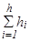
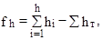
где 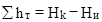
Полученную невязку сравнивают с допускаемой величиной fd. Если она по абсолютной величине превышает допускаемое значение, то повторяют вычисления, а в случае отсутствия ошибок в вычислении ход переделывают заново. В противоположном случае невязку распределяют с обратным знаком поровну на все станции хода, вычисляют исправленные превышения. По исправленным превышениям последовательно вычисляют отметки опорных реперов по формуле:
Нi = Hi-1 +hi, (5)
где Нi, Нi-1 - отметки последующей и предшествующей точек хода.
Результаты вычислений записывают в журнале нивелирования. При наблюдениях за вертикальными перемещениями на опорные реперы передают отметку с пунктов государственной сети. Если пункты государственной сети расположены от участка на расстоянии более 2 км, то для передачи отметок используют рабочие реперы или характерные точки, получившие отметки в государственной системе высот при изысканиях под строительство.
При наблюдениях за вертикальными перемещениями трубопровода на переходах, на крутых склонах и за горизонтальными перемещениями наземной части переходов и трубопровода создают рабочее обоснование. В этом случае параллели осей сооружений и трубопровода закрепляют рабочими реперами, сохраняющими свое пространственное положение на весь период наблюдений в одном цикле. В качестве реперов наиболее часто используют металлические штыри, которые забивают в грунт, предварительно сняв верхний слой. По радиусу около одного метра вокруг штыря делают окопку на глубину 3,0 м.
Перед началом и после завершения работ в каждом цикле наблюдений определяют отметки и координаты рабочих реперов.
При определении отметок используют тот же класс точности нивелирования, что и при определении отметок наблюдаемых точек (деформационных знаков).
Для определения координат измеряют расстояния от опорного до рабочего репера, а направление с опорного на рабочий репер получают построением створа. Точность измерений та же, что при наблюдениях за перемещениями деформационных знаков.
Отсчеты по рейкам берут в такой последовательности:
- по черной стороне задней рейки аr;
- по черной стороне передней рейки вr;
- по красной стороне передней рейки вk;
- по красной стороне задней рейки аk.
Для контроля отсчетов вычисляют разности нулей реек
РО1 = аk - аr и РО2 = вk - вr
Расхождения между ними не должно превышать + 5 мм. Если это условие нарушено, то измерения на станции повторяют.
Превышение вычисляют по черной
hr = аr-вr (6)
и красной сторонам реек
hk = аk-вk, (7)
а за окончательное принимают среднее значение
h = 0,5(hr+hk) (8)
При обработке результатов измерений допускаемую невязку вычисляют по формуле
fd=10
мм 
где п число станций в ходе одного направления.
При нивелировании в двух направлениях (прямо и обратно) вместо распределения невязки вычисляют средние значения превышений между опорными реперами, придают им знак прямого хода и по полученным значениям hср вычисляют отметки.
На переходах, сооружаемых на крутых склонах, опорные реперы устанавливают на концах перехода, а отметки рабочих реперов на концах наклонных линий определяют техническим нивелированием от опорных реперов.
4. НАБЛЮДЕНИЯ ЗА ВЕРТИКАЛЬНЫМИ ПЕРЕМЕЩЕНИЯМИ ТРУБОПРОВОДА И ОПОР ПЕРЕХОДОВ
При обследовании надземных переходов наблюдают за вертикальными перемещениями опор трубопроводов и пилонов. Выбор конструкции для наблюдений производят при разработке технического задания.
При наблюдениях за перемещениями трубы точку для наблюдений закрепляют на опоре скольжения 2, а при наблюдениях за опорой - на траверсе 4 (рис. 2). Точки наблюдаемых поверхностей фиксируют сбоку окрасками 1 и 3 несмываемой краской. В отдельных случаях для наблюдений за опорами в их тело закладывают и приваривают деформационный знак 6.
Время проведения циклов наблюдений намечают в техническом задании.
Отметки наблюдаемых точек в циклах, определяют техническим нивелированием в одном направлении. Допускают использование нивелиров типа Н10.
Для определения отметок между опорными реперами нивелирный ход не должен иметь более 5 станций. Допускают наблюдение деформационных точек в качестве промежуточных, если неравенство плеч не превышает 20 м. При проложении хода в разных циклах по возможности сохраняют места постановки прибора.
Отсчеты на всех точках производят по черной и красной сторонам рейки, а результаты записывают в журнал нивелирования.
При нивелировании точек, расположенных выше горизонта прибора, используют специальную рейку (рис. 3). Она состоит из нивелирной рейки 5 типа РНЗ, к которой шурупами 4 прикреплены кронштейны. Нижняя поверхность кронштейнов должна совпадать с поверхностью пятки 1 рейки. Рейку подвешивают кронштейном на наблюдаемую поверхность 2. Для наблюдения необходимо иметь комплект подвесных реек различной длины.
Если отсчеты берут по подвесной рейке, то ее располагают пяткой вверх. При этом отсчетом в журнале нивелирования приписывают знак «минус».
Вертикальные перемещения отметок деформационных знаков (с обычной рейкой, устанавливаемой пяткой вниз) в циклах наблюдений определяют техническим нивелированием в одном направлении. Допускается использование нивелира Н10.
Перед началом работ в цикле тщательно выполняют проверку главного уровня прибора. После юстировки влияние непараллельности оси уровня и визирной оси (негоризонтальности визирного луча) не должно превышать 4 мм на расстояние 50 м. Нивелирный ход на наклонном переходе не должен иметь более б штативов (станций). Места установки прибора по возможности сохраняют во всех циклах наблюдений. Деформационные знаки разрешается использовать как промежуточные точки, если при этом неравенство плеч не превышает 25 м. Результаты измерений записывают в журнал нивелирования деформационных знаков.
Отметки промежуточных точек вычисляют через горизонт прибора по сторонам рейки черной
ГПг = 0,5 (НА + аr + Нв + вr) (9)
и красной
ГПk = 0,5 (НА + аk+Нв + вk), (10)
где НА и Нв - отметки связующих точек на станции.
Отметку промежуточной (j-ой) точки находят по черной
Нjr = ГПr-Сjr (11)
и красной сторонами рейки
Нjk = ГПk - Сjk, (12)
где Сjr и Сjk - отсчеты по черной и красной сторонам рейки на j-ой промежуточной точке.
В дальнейшую обработку принимают среднее
Нj = 0,5(Hjr+Нjk) (13)
Если на промежуточной точке специальная рейка с разностью нулей сторон РОт (как и у основной рейки) подвешена пяткой вниз, то для вычисления отметки по красной стороне вместо (12) используют формулу
Нjk = ГПk - Сk - 2РОт (14)
Если на связующих и промежуточных точках рейки подвешены пятками вниз, с учетом отрицательного знака отсчетов, вычисления отметок осуществляют по формулам (10) -(14).
Отметки деформационных знаков выписывают в ведомость вычисления перемещений и по формуле (1) вычисляют вертикальные перемещения точек.
При наблюдении за вертикальными перемещениями на склонах с углами наклона более 4 градусов целесообразно применять наклонное нивелирование. При этом на оси перехода вблизи опорных реперов закрепляют рабочими реперами точки А и В. Отметки этих точек Hа и НВ определяют от опорных реперов техническим нивелированием в прямом и обратном направлениях.
Нивелирование наклонным лучом выполняют в такой последовательности:
1. Теодолит типа ТЗО устанавливают над точкой А, приводят его в рабочее положение и рулеткой с миллиметровыми делениями измеряют высоту прибора ik.
2. На точку В устанавливают рейку и закрепляют ее на весь период работы теодолитом на точке А.
3. На точке А наводят среднюю горизонтальную нить на отсчет а по рейке на точке В и закрепляют положение зрительной трубы.
4. Другую рейку последовательно устанавливают на всех деформационных знаках и берут отсчеты в1...вj... по черной и красной сторонам. Для контроля вычисляют разности РО нулей рейки, которые не должны отличаться от теоретического значения более 3 мм.
Одновременно с отсчетами по средней нити берут дальномерные отсчеты D1…Dj…D.
Если длина наклонной линии превышает 100 м, то ее разбивают на 2 части. Первую часть наблюдают с точки А, вторую - с точки В.
Результаты измерений и их обработки записывают в журнал нивелирования наклонным лучом.
При обработке отметку деформационного знака вычисляют по формуле
Нj = ГПА+knj-вj, (15)
где ГПА= НА + iA - горизонт прибора станции;
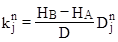
Dj - расстояние от станции до наблюдаемой точки;
вj - отсчет по рейке в наблюдаемой точке.
Отметки вычисляют по черной и красной сторонам рейки, а за окончательный результат принимают среднее.
Если измерения производят по частям (с точки А и В), то среднюю точку наблюдают дважды, а при вычислениях превышение по второй части наклонной линии определяют по формуле:
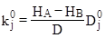
где D0j - расстояние от станции (точки В) до наблюдаемой точки по второй части линии.
После завершения работ представляют следующие материалы:
- схему обоснования и журналы нивелирования опорных реперов;
- схему расположения деформационных знаков;
- журнал нивелирования деформационных знаков;
- ведомость вычисления перемещений трубопровода;
- график перемещений трубопровода.
5. НАБЛЮДЕНИЕ ЗА ВЕРТИКАЛЬНЫМИ ПЕРЕМЕЩЕНИЯМИ ПРИ ПРОФИЛАКТИЧЕСКИХ ОБСЛЕДОВАНИЯХ
При профилактических обследованиях определяют вертикальные перемещения опор. Для этого точку верхней поверхности закрепляют откраской или выбирают другую характерную точку опоры.
Наблюдение выполняют 3-4 раза в год в период наибольших перемещений опор. В зависимости от технического задания осуществляют сплошной или выборочный контроль.
Отметки наблюдаемых точек определяют техническим нивелированием. Ходы технического нивелирования должны опираться на опорные реперы. Отметки опорных реперов получают техническим нивелированием в прямом и обратном направлении нивелирами типа НЗ один раз в год.
Перед началом работ по определению отметок деформационных знаков тщательно выполняют проверку главного условия нивелира. Влияние негоризонтальности визирного луча при этом не должно превышать 4 мм на расстояние 75 м.
Нивелирный ход не должен иметь более 10 станций. Деформационные знаки используют в ходе, как промежуточные точки, если неравенство плеч при этом не превышает 40 м. Отсчеты берут по обоим сторонам рейки, а результаты измерения записывают в журнал технического нивелирования. При нивелировании точек, расположенных выше горизонта прибора, используют подвесную рейку с кронштейнами, а отчет в журнал записывают со знаком «минус».
При определении отметок на крутых склонах применяют нивелирование наклонным лучом.
Обработку результатов измерений осуществляют как при наблюдении в исследовательских целях.
6. НАБЛЮДЕНИЯ ЗА ГОРИЗОНТАЛЬНЫМИ ПЕРЕМЕЩЕНИЯМИ ТРУБОПРОВОДОВ И ОПОР
А. Поперечные составляющие горизонтальных перемещений.
Для определения поперечных перемещений (ось Y) опор на берегах устанавливают рабочие реперы 1, II... по оси перехода (рис. 4). Между рабочими реперами должна быть прямая видимость. Расстояние от створа до наблюдаемых точек не должно превышать 1,2 м.
Для определения поперечных перемещений опор измеряют отклонения боковых, граней опор от вспомогательного створа в нижнем и верхнем сечении, закрепленных открасками. На боковую грань опор устанавливают горизонтальную рейку РНЗ длиной 1,5 м.
Положение точек рабочего обоснования 1 и 2 определяют от опорных реперов А и В по углам bа, bВ и расстоянием 1А1В. Значения углов должны быть близки к 90°, а расстояние не превышать 5 м.
Рабочий репер состоит из металлической пластины размерами 100 х 100 мм, к которой по углам приварены штыри. Штыри вбивают в очищенный от растительного покрова грунт. Пластина должна располагаться вровень с поверхностью грунта. Вокруг пластины делают окопку глубиной на штык лопаты. Центр знака фиксируют в каждом цикле насечкой креста по масляной краске на пластине.
В нулевом цикле устанавливают рабочий репер, наносят крест насечек приближенно в центре пластины и измеряют примычные угол и расстояние.
При измерении угла теодолит ТЗО устанавливают над центром опорного знака (насечкой на металлической штанге) возможно ниже и центрируют с помощью зрительной трубы, направленной в надир. Измерения осуществляют двумя полными приемами с вычислением среднего значения до минуты дуги. Полученное значение принимают за проектное b° для построения угла в последующих циклах наблюдений.
Измерения расстояний производят стальной рулеткой с миллиметровыми делениями. В паспорте рулетки должны быть приведены поправки d1 метровых делений. Измерение выполняют в прямом и обратном направлениях пятью парами отсчетов 1Н в начальной и 1k конечной точках измеряемого отрезка. Между парами отсчетов рулетку смещают не менее чем на 0,1 м. В среднее значение измеренного отрезка вводят поправку на ком-парирование рулетки
d1комп=d1к-d1н (17)
где d1к, d1н - поправки делений рулетки на отсчетах, в конце и начале отрезка.
Полученное значение принимают за проектное для построения в последующих циклах. Одновременно измеряют с помощью термометра температуру воздуха, а среднее значение принимают за исходную величину t° температуры мерного прибора в нулевом цикле.
В последующих циклах наблюдений используют сохранившуюся насечку или наносят новую и измеряют полученные угол и расстояние. Угол bi измеряют одним полным приемом, а расстояние li - в прямом и обратном направлениях с тремя парами отсчетов.
В измеренное расстояние вводят по формуле (17) поправку за компарирование и поправку за температуру:
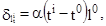
где a = 12,5 ´ 10 -6 - коэффициент линейного расширения мерного прибора (стали);
ti - температура мерного прибора (воздуха) при измерении в i-ом цикле.
Если измеренное значение bi отличается от b0 менее 20’, то редуцирование (перемещение точки в проектное положение) не производят. Измеренное значение расстояния используют для вычисления редукции
Dl=li-10 (19)
На эту величину смещают точку и получают проектное положение рабочего репера.
Для контроля снова измеряют расстояние. Расхождение с проектным значением более 3 мм не допускается.
Для определения перемещений трубы на опорах измеряют отрезок d (рис. 2).
В этом случае отклонение Ст трубы вычисляют по формуле
Ст = Сов +d (20)
где Cов - отклонение боковой поверхности опоры в верхнем сечении от рабочего створа 1-II.
Результаты измерений выписывают в ведомость вычислений перемещений и определяют смещения для опор в верхнем и нижнем сечениях, а также перемещения трубы.
Б. Продольные составляющие горизонтальных перемещений.
Для определения продольных перемещений опор по оси Х трассы (рис. 5) на берегах закрепляют парами реперов створы АВ и СД, а на пересечении створов с осью Х устанавливают рабочие репера 1 и II, и измеряют расстояние между рабочим репером 1 и риской на опоре 1 между рисками на опорах 1-2, 2-3 и т.д., между риской над последней опорой и рабочим репером II. Риски наносят насечкой по открашенной поверхности опоры в нижнем ее сечении в местах, удобных для измерения расстояний. Для определения наклона верхнего сечения опоры используют проецирование одной из граней опоры с помощью теодолита при двух положениях вертикального круга. При высоте опор до 3 м и отсутствии ветра проецирование выполняют отвесом.
Длина створа не должна превышать 25-30 м. Опорные и рабочие репера имеют такие же конструкции, как при определении поперечных перемещений.
Положение точек рабочего обоснования 1 и II намечают построением створов АВ и СД с помощью теодолита Т 30 при двух положениях вертикального круга. Теодолит устанавливают по возможности ниже, а центрирование осуществляют трубой прибора в надир.
Для определения абсциссы Xj деформационных знаков расстояния D1-1, D1-2,..., D(j-1),…j измеряют стальными компарированными рулетками с миллиметровыми делениями тремя парами отсчетов в прямом и обратном направлениях, натяжение рулетки силой 10 кг осуществляют динамометром. Между парами отсчетов рулетку передвигают на 0,1-0,3 м. Расхождение между длинами отрезков не должны превышать 10 мм.
В среднее значение из хода прямо и обратно вводят поправку на компарирование
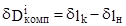
и температуру
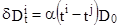
где D0 - длина отрезка в нулевом цикле.
Результаты записывают в журнал измерения длин линий.
Абсциссы Хij, деформационных знаков в текущем (i-ом) цикле вычисляют по измеренным длинам отрезков D1-1, D1-2, …, D(j-1)-j
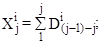
Далее вычисляют невязку
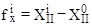
и поправки в координаты точек
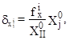
где ХiII, Х0II - вычисленные по измеренным длинам: линии: абциссы рабочего репера II в текущем (i-ом) и нулевом циклах;
Х0j - абцисса наблюдаемой (j-ой) точки в нулевом цикле наблюдений.
Исправленные значения абцисс точек вычисляют по формуле
Хijиспр=Хij+dxj (26)
и выписывают в ведомость вычисления перемещений. Продольные перемещения Нij определяют по формуле (2) и составляют график перемещений. На графике по продольным и поперечным перемещениям строят равнодействующую и по теореме Пифагора вычисляют ее длину.
После завершения работ представляют следующие материалы:
- схему планового обоснования;
- схему расположения деформационных знаков;
- журналы измерения длин линий;
- ведомость вычисления перемещений;
- график перемещений.
7. НАБЛЮДЕНИЯ ЗА ПРОГИБАМИ ТРУБОПРОВОДА НА ПЕРЕХОДАХ
Наблюдения за прогибами осуществляют на переходах через препятствия и на крутых склонах. Циклы наблюдений выполняют 1-2 раза в летний период, 1-2 раза в осенне-зимний период, после обильных снегопадов и обледенении трубы.
При пропуске очистных устройств ведут непрерывные наблюдения.
При наблюдениях с исследовательскими целями на опытном участке закладывают опорные реперы (см. п. 3) и прокладывают нивелирный ход.
При наблюдениях техническим нивелированием от опорных реперов определяют отметки опорных поверхностей трубопроводов в пролете, точек на нижней поверхности трубы в середине пролета и двух точках в 3-5 м от опор (рис. 6а). Положение этих точек закрепляют открасками.
При определении отметок точек на нижней поверхности трубы нивелирную рейку устанавливают пяткой вверх, а отсчету приписывают знак «минус». В этом случае отметку точки по красной стороне реек вычисляют по формуле
Hj=Нрn+akj-вkj-2РО (27)
где Нj, Нрn - отметки определяемой точки и опорного репера.
Ход технического нивелирования, опирающийся на опорные реперы, не должен иметь более 5 станций.
Для определения стрелок прогиба f измеряют нитяным дальномером расстояния dII, dIII, dIV и d (рис. 6а). По отметкам точек вычисляют стрелки прогиба
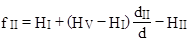
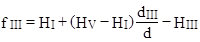
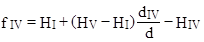
где НI, НII, НIII, HIV и НV - отметки точек I, II, III, IV и V.
Одновременно в сечениях трубы у определяемых точек измеряют величину овализации с помощью специальной струбцины (рис .6б). Она состоит из двух сборных скоб 2, соединенных накладкой 3, неподвижного упора 5 и микрометронного винта 1. Для эталонирования микрометронного винта используют калибр 4.
Не рекомендуется определять диаметр трубы по отметкам верха и низа трубы, т.к. этот способ не удовлетворяет требованиям к точности и отличается большой трудоемкостью.
При профилактических обследованиях прогибы определяют в нулевом (эталонном) цикле после обильных снегопадов, обледенении трубы и в летний период. При этом техническим нивелированием измеряют превышения между точками I, II, III, IV, V, вычисляют отметки в условной системе (без связи с опорными реперами) и стрелки прогиба по формулам (28).
При пропуске очистных устройств над опорами (точками 1 и V) к верхней поверхности трубы закрепляют струну, а на точках II, Ш и IV с помощью хомутов устанавливают отвесно металлические линейки. Стрелки прогиба в этом случае непосредственно отсчитывают по линейке на уровне струны.
По окончании работ представляют:
- схему и журналы измерений;
- ведомости вычисления стрелок прогиба;
- исполнительный чертеж с величинами стрелок прогиба.
Рис. 1
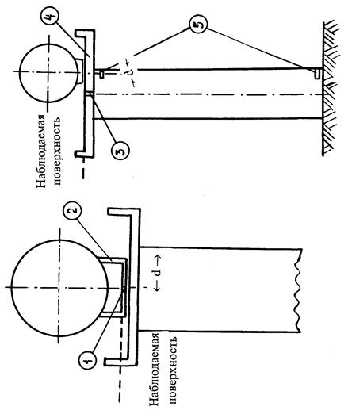
Рис. 2
Рис. 3
Рис. 4
Рис. 5
Рис. 6
Приложение № 2
Акт
обследования технического состояния надземного перехода магистрального
газопровода
|
____________________________ «__ » __________ 200 __г. место составления акта Мы, нижеподписавшиеся, т. ________________________________________________ ___________________________________________________________________________ ФИО, должность ___________________________________________________________________________ представителей заказчика и специализированной организации ___________________________________________________________________________ составили настоящий акт в том, что в период с ___________________________________ по __________________________ было произведено обследование надземного перехода магистрального газопровода___________________________________________________ наименование, диаметр ________________________________________ через ______________________________ кол-во ниток 1. Год постройки ____________________________________________________________ 2. Срок эксплуатации ________________________________________________________ по проекту, с учетом исполнительной документации 3. Технология транспорта продукта ____________________________________________ давление; температура газа в момент обследования ___________________________________________________________________________ 4. Конструкция надземного перехода ___________________________________________ 5. Принятый порядок обозначения _____________________________________________ описать принятый порядок ___________________________________________________________________________ ___________________________________________________________________________ 6 .Наличие реперов __________________________________________________________ номер репера, местоположение, отметка 7. Год предшествующего обследования _________________________________________ 8. Результаты ознакомления с технической документацией: а) Представлена и рассмотрена следующая техническая документация ___________________________________________________________________________ перечислить основные документы б) Качество ведения документации по эксплуатации сооружения _________________ ___________________________________________________________________________ указать недостатки в) Выполнение мероприятий (службой ЛЭС), изложенных в предыдущем отчете и акте _______________________________________________________________________ выполнено, нет г) Сведения по капитальному ремонту _______________________________________ дата ремонта, вид 9. Обследование проводилось _______________________________________________ указать какие виды обследования ___________________________________________________________________________ какими приборами проводились 10. В результате обследования установлено. 10.1. По пролетное строению: 10.1.1. Положение главной оси трубопровода в плане и профиле _________________ ___________________________________________________________________________ положение марок от ПК до ПК, их координаты и высоты 10.1.2. Напряженно-деформированное состояние газопровода ___________________ ___________________________________________________________________________ 10.1.3. Состояние покрытий трубопровода ___________________________________ ___________________________________________________________________________ сплошность, толщина и т.п. 10.1.4. Состояние стенки трубы _____________________________________________ толщина в мм, наличие и характер ___________________________________________________________________________ коррозии (цвет, сплошная, бугристая, легко или трудно отделимая от ___________________________________________________________________________ трубы), наличие каверн, глубина наиболее крупных из них, расположение 10.1.5. Состояние раскосов, стоек, вант, подвесок, болтовых соединений __________ ___________________________________________________________________________ коррозия, дефекты и повреждения, натяжение и пр. ___________________________________________________________________________ 10.2. По опорным частям: 10.2.1. Тип конструкции ___________________________________________________ 10.2.2. Недостатки и повреждения ___________________________________________ ___________________________________________________________________________ 10.3. По опорам: 10.3.1. Конструкция _______________________________________________________ 10.3.2. Недостатки и повреждения ___________________________________________ 10.4. По окружающей среде: 10.4.1. Состояние русла, пойменных участков, берегов, берегоукрепительных сооружений ________________________________________________________________ 10.4.2. Характер отрицательного воздействия сооружений надзорного перехода на окружающую среду __________________________________________________________ подтопления, заболачивание, занос ___________________________________________________________________________ сельскохозяйственных и лесных угодий, образование оползней, ___________________________________________________________________________ оврагов и т.д. 11. Контрольно-измерительные измерения ______________________________________ перечень графиков, схем, ___________________________________________________________________________ рисунков, прикладываемых к акту 12. Оценка технического состояния перехода в целом и его элементов _______________ ___________________________________________________________________________ 13. Прочие сведения _________________________________________________________ 14. Рекомендации и предложения, направленные на обеспечение надежной эксплуатации _______________________________________________________________ ___________________________________________________________________________ Должность Ф.И.О. Подписи |
Список литературы
1. СНиП 2.05.06-85*. Магистральные трубопроводы
2. СНиП III-42-80. Магистральные трубопроводы. Правила производства и приемки работ
3. СНиП III-4-80*. Техника безопасности в строительстве
4. Правила технической эксплуатации магистральных газопроводов, утв. МГП, 1988 г.
5. Правила пожарной безопасности для предприятий и организаций газовой промышленности (ВППБ 01-04-98).
6. Правила безопасности в нефтяной и газовой промышленности, Госгортехнадзор, 1993 г.
7. Правила безопасности при эксплуатации магистральных газопроводов, утв. МГП СССР, 1985 г.
8. Правила охраны магистральных трубопроводов, Госгортехнадзор, 1998 г.
9. Положение по организации и проведению комплексного диагностирования линейной части магистральных газопроводов ЕСТ
10. Типовая инструкция по организации безопасного проведения газоопасных работ. 11. Устав внутреннего водного транспорта
12. ВСН 011-88. Очистка полости и испытание
13. РД-51-2-97. Инструкция по внутритрубной инспекции трубопроводных систем
14. СНиП 3.06.07-86. Мосты и трубы. Правила обследования и испытаний
15. Петров И.П., Спиридонов В.В. Надземная прокладка трубопроводов. М., Недра, 1973 г.
16. Методика оценки работоспособности балочных переходов магистральных газопроводов через малые реки, ручьи и другие препятствия, ВНИИГАЗ, 1999 г.